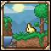
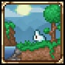
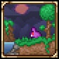
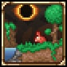

Journey Mode
"With great power comes great responsibility"
Journey Mode is a difficulty option that can be selected during character and world creation. It provides the player access to a wide array of customization options during gameplay, including duplication of items, modification of time and weather, and difficulty sliders. Journey Mode is only accessible with Journey characters in Journey worlds (Journey worlds can only be accessed using Journey characters, and Journey characters can only play in Journey worlds). Journey Mode is intended to be Terraria's "creative" or "tourist" mode, making it relatively easy to acquire items and explore the game's various elements and mechanics without having to overcome its normal progression of challenges; though Journey players do have the ability to adjust the game's difficulty on-the-fly to challenge themselves and test different difficulty levels.

Classic Mode
"Your Adventure Begins..."
Classic Mode is a difficulty option that is selected by default during world creation. As the name suggests, Classic Mode worlds offer Terraria's "normal" gameplay experience which existed prior to the introduction of other world modes. As such, Classic Mode worlds do not feature the "creative" freedom of Journey Mode worlds, nor are they as challenging as Expert Mode or Master Mode worlds. All newly created characters in Classic Mode and above spawn with a Copper Shortsword, Copper Axe, and Copper Pickaxe in their inventory. While the world content of Classic Mode worlds in general mirrors that of the other world modes, it does not contain any Expert-exclusive or Master-exclusive items. There is no Classic Mode-exclusive content.

Expert Mode
"Fortune & Glory, Kid"
Expert Mode is a difficulty option that can be selected during world creation. It greatly increases the difficulty of the game, as well as the quantity and quality of drops and the chances to obtain rare items. Furthermore, it offers certain exclusive content. Expert Mode begins the moment the Expert Mode world is created, and cannot be altered after that by the player. Expert mode used to be the hardest gamemode terraria had to offer, (besides hardcore) it doubles the damage that enemies do in Classic mode and increases debuff durations, but also increases the amount of rewards you can get from bosses and enemies. Now days, many seasoned players encourage newer players to start with Expert mode because of all the expert exlusive drops which help balance out the difficulty anyways.

Master Mode
"Game over man, game over!"
Master Mode is a difficulty option that can be selected during world creation. It further increases the difficulty of the game beyond Expert Mode, and offers a small number of Master Mode-exclusive items that can be dropped by bosses. Like Expert Mode, Master Mode begins the moment the Master Mode world has been created, and cannot be altered after that by the player. Many Expert Mode changes also apply to Master Mode, including unique drops and modified AIs. However, in Master Mode, although players can get more loot and coins from enemies and bosses, they are significantly harder to face, dealing 3x the damage than in Classic Mode.